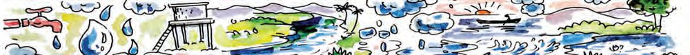
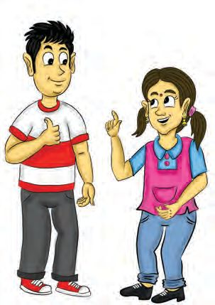
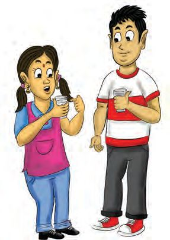
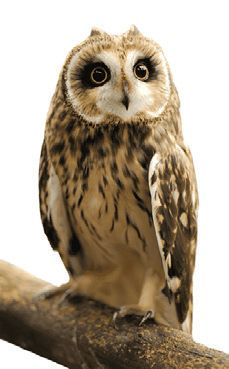
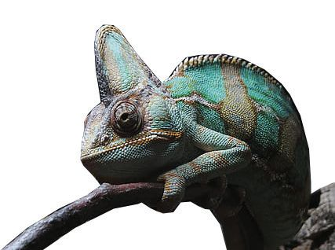
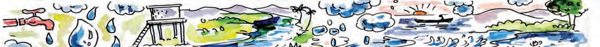
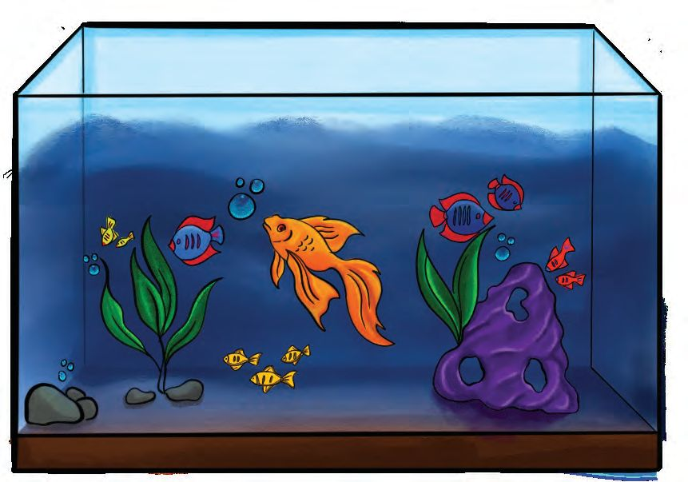

7 MAGIC OF SENSES
I can recognise even
the lowest of the
sounds.
I can see the prey even
from a great distance.
I can recognise
tastes using my
legs.
I can recognise
even the faintest
of smells.
Even if my body is
hard like a rock, I
will know wherever
touched.
Illustration 7.1
You have read what each creature has said, haven’t you?
What are the special abilities of these creatures to recognise their
surroundings?
122 BASIC SCIENCE V
Page 43

Figure fig_ch02_p043_01 (Page 43)
Examine the illustration and complete the table below
Creature
Eagle
Organ
Eyes
Special ability
Far sight
Butterfly
Crocodile
Dog
Bear
Table 7.1
These organs help the creatures to understand their surroundings
through sight, touch, hearing, smell and taste.
Similarly, which are the organs that help us to understand our
surroundings?
l
Eyes - Sight
l
l
l
l
Sense Organs
Creatures have different types of organs that help
them to understand the surroundings. These organs
are called sense organs. Eyes, ears, nose, tongue and
skin are the sense organs of human beings.
Keep a lock and some keys on the table as shown in the picture.
Blindfold those children who are ready to participate in the contest.
The winner is the one who opens the lock within 30 seconds.
Did everyone who was blindfolded win to open the lock?
Is it easy to recognise objects without the help of the eyes?
Draw the picture of eyes and colour it.
Picture 7.2
When the Position Changes
Are the eyes of other creatures similar to our own eyes? Look at
the position of the eyes of the creatures in the picture.
Picture 7.2
How does the position of the eyes help these creatures?
Classify creatures into groups on the basis of the position of their eyes.
124 BASIC SCIENCE V
Page 45
Figure fig_ch02_p045_01 (Page 45)

Figure fig_ch02_p045_02 (Page 45)

Figure fig_ch02_p045_03 (Page 45)

Figure fig_ch02_p045_04 (Page 45)

Figure fig_ch02_p045_05 (Page 45)
Those with eyes in front of
the head
Those with eyes on the sides
of the head
Table 7.2
Animals with eyes on the front of their heads are able to precisely
understand the position and distance of the objects. This pecularity
of animals like tigers and lions helps them to catch their prey.
Animals with eyes on the sides of their heads are able to see both
the sides. This feature helps animals like deer and rabbits to escape
from their predators.
Cat
Owl
The pupil of a cat’s eye appears to
constrict in the daylight and dilate to
the maximum at night. This helps the
cat to see even in low light. A cat’s eye
has a layer of specialised cells.
That is the reason for the shining of
their eyes at night. The eyes of many
animals that hunt for prey at
night have this feature.
The owl has large eyes
directly at the front of its
head. The owl is also able
to see sights behind it by
rotating its neck to
the back.
Chamaeleon
The chamaeleon can
simultaneously move its
eyes in different directions
and see around it.
BASIC SCIENCE V 125
Page 46

Figure fig_ch02_p046_01 (Page 46)

Figure fig_ch02_p046_02 (Page 46)
Eye Diseases
Conjunctivitis spreading
Many people in the state are seeking treatment for
conjunctivitis. This disease spreads fast among children.
Care should be taken not to touch the objects used by
the patient, as this is a communicable disease.
Medical Officer
Primary Health Centre
Have you seen the notice issued by the health department?
What are the symptoms of conjunctivitis?
●
Pain in the eye.
l
l
Have you seen the charts used for vision tests?
Collect more information about them.
Snellen Chart
Picture 7.5
There are letters of different sizes in the chart commonly
used for testing eyesight. The letters are arranged in
such a way that the size decreases from top to bottom.
This was developed by Dutch Ophthalmologist Herman
Snellen in 1862.
The Visually Challenged
How do visually challenged individuals understand their
surroundings?
Examine the different currency notes.
In what ways do they differ?
Which features help the visually challenged individuals to recognise
the currency note? Prepare a short note.
Look at the pictures.
Picture 7.6
Seat number in a train
Picture 7.7
The tile on the footpath
What are the special features you observed?
BASIC SCIENCE V 127
How do they benefit visually challenged individuals?
Which features of the devices like mobile phones, watches,
computers, etc. help them?
Picture 7.8
What are the other systems to help them?
Picture 7.9
The smart cane and the digital Braille slate are examples for the
changes in these systems due to the developments in technology.
Collect more information about the features of these devices.
Smart Cane
To find the way
: It helps to find the way more easily
To locate obstacles : Ultrasonic/infrared sensors can be used to locate
obstacles in real time.
Connectivity
: Smart canes can be connected through bluetooth
to smartphones or other devices.
To identify falls
: It passes information to the concerned if there
is a fall and the individual is unable to get up.
Customisation
: Adjustable height, different handle grips, different
sensory feedback arrangements
Data collection
: They can collect information about distance
travelled, walking speed, obstacles faced, etc.
See pictures and instructions in the Health Department’s brochure.
m
m
m
m
m
m
m
m
Do not rub the eyes.
Do not touch inside the eye.
Do not watch television in dimlight.
Do not use mobile phones, computers, televisions, etc.
for a long period of time.
Do not use the handkerchiefs used by others.
Read in a well lit place.
Get the eyes tested periodically.
Include fruits, leafy and other vegetables in the diet.
BASIC SCIENCE V 129
Do you follow these instructions?
What health habits should you follow for the health of the eyes?
Write in your Science Diary.
Hear and Understand
Picture 7.10
How does the blindfolded child in the picture understand the
positions of her friends? We are able to understand our surroundings
clearly, when hearing combines with sight.
Do we give enough care to protect the ear, the organ that helps
us to hear?
What should we do in these situations?
Heat some oil
y
Ouch..! M
g.
in
h
c
a
is
ear
’s go
e, let the
m
o
C
lt
onsu
and c ctor.
do
and pour it
into the ear.
Picture 7.11
Is the grandfather’s advice correct?
130 BASIC SCIENCE V
What should we do in such situations?
Don’t follow treatment methods without scientific basis, when we
can access the service of healthcare professionals directly or over
phone. Use medicines in the ear only according to the instructions
of the healthcare professionals. Self treatment is dangerous. This
can even lead to loss of hearing. Did you know that water getting
inside the ear can cause injury or infection to the ear? This may
lead to ear ache and even loss of hearing.
What should we be careful about to avoid
such problems?
● Don't put any objects such as pencil,
pen, matchstick, safety pin, etc. into
the ear.
l
l
l
Hearing Aids
Picture 7.12
Loss of hearing occurs due to many reasons.
Hearing aids are devices to solve this problem.
A wide variety of hearing aids are available now with special
features to increase sound volume and clarity.
Cochlear Implant Surgery
Cochlear implant surgery is a surgery to correct
congenital hearing loss. This is a surgery to
transplant the cochlea inside the ear.
BASIC SCIENCE V 131
What is the reason for loss of smell when you have a cold?
We always feel a moist inside our nose, don’t we? The reason for
this is the secretion in the nose. The function of this secretion is to
remove the dust particles and pathogens getting inside the nose.
The cold is a condition when this secretion is produced in excess,
when there is a virus infection.
When secretion is produced in excess, the odour particles will not
reach the cells that help to recognise the smell. That is why we
don’t recognise smells.
Does smell also help in understanding the surroundings like sight
and hearing? Write your opinion in your Science Diary.
132 BASIC SCIENCE V
We need the nose not just to smell, but also to breathe, don’t we?
What should we be careful of to protect the nose?
● Do not put any objects inside the nose
● Don't blow your nose forcefully
l
Secretion particles from the nose and mouth are likely to fall on
other people's bodies while we sneeze or cough. What should
be done to avoid this?
● Cover the mouth and nose with a clean handkerchief.
● Don't use the handkerchief used by others.
l
Wow, Such a Great Taste!
Picture 7.14
Did you see the different food items in the picture? Do they all
taste the same?
When is it possible to sense the true taste of food? When it is well
chewed or not? Why?
We sense tastes when it is dissolved in saliva and stimulates the
taste buds.
List the tastes of the food you consume in a day.
BASIC SCIENCE V 133
Does the tongue help only in tasting?
What are the other functions of the tongue?
l
Talking
l
What should be taken care of, for the health of the tongue?
l
Don’t eat extremely hot or cold food.
●
Don’t forcefully clean the tongue with a tongue cleaner.
Touch and Understand
Look at the picture.
The objects like a ball, beads of different shapes, a glass of
cold water, a smooth stone and a rough stone are kept on the
table. A child attempts to identify each object blindfolded.
Do this activity in your class.
Picture 7.15
134 BASIC SCIENCE V
Page 55
Figure fig_ch02_p055_01 (Page 55)
Could you recognise all the objects?
How were they recognised?
What all features can be recognised through touch?
Which organ helped you in this?
The skin is the organ that helps us to recognise objects by
touch. It also helps us to feel sensations like hot and cold. It
covers and protects our body. The skin is the largest organ in
the body. It prevents pathogens from entering the body. The
skin has a role in controlling the temperature of the body and
eliminating wastes through sweat.
Protecting the Skin
What should we be careful of in protecting the skin?
● We should keep the skin clean.
●
We should drink sufficient water.
●
We should include leafy vegetables and fruits in our diet
that help in the health of the skin.
Add more instructions and write them in your Science Diary.
Let us conduct an interview with a healthcare professional to
know more about the functioning and protection of sense organs.
Prepare a questionnaire by including all your doubts.
What should be included in the questionnaire?
l
l
Summarise the information that you received through the interview
and write in your Science Diary. Write the protective measures
There is a variety in the sense organs of different creatures.
Prepare an album including the pictures of these creatures.
2.
Design a new device that can be effectively used by visually
and aurally challenged persons. Prepare a sketch and
describe the making procedure in your Science Diary.